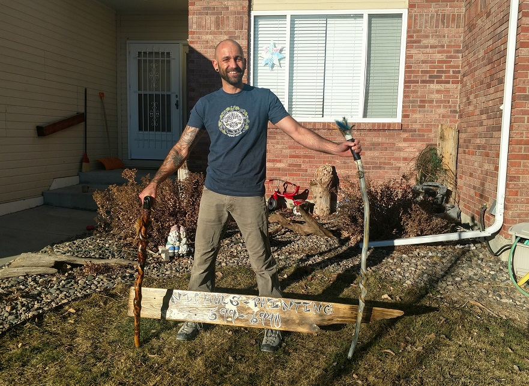

Meet Jerry Nichols
Jerry has over 20 years of experience painting. Jerry started painting when he was just 5 years old with his stepdad. As he got older, he explored many different jobs and developed many different skills from retail, to heavy equipment, construction, solar product installation, tree work, lawn care, supervisor positions, but he always found himself coming back to the painting industry. Jerry has an artist eye and feels most at peace when he’s painting.
He pays close attention to detail and provides clean, quality work. Jerry has excellence customer service skills and strives to ensure his customers are happy and satisfied. He has incredible knowledge of products and is skilled in using many different types of paint and finishes.
Nichols Quality Painting was founded in 2015. It is a locally owned and operated company. The main goal of this company is to provide quality, professional and friendly service to all customers. Jerry specializes in interior paint, exterior paint and custom stain. He believes it is essential to conduct a thorough prep work process. He will inspect every job in person prior to giving an estimate to ensure quality work.
Nichols Quality Painting is licensed and carries full liability insurance.
Jerry is not only a painter, but an artist with many unique skills. He is committed to helping all his customers bring their vision to life and transform their space.